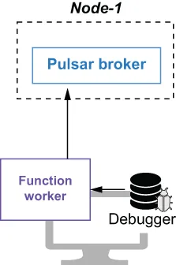

After we are satisfied with our unit testing results, we will want to see how the Pulsar function will perform on a Pulsar cluster. The easiest way to test a Pulsar function is to start a Pulsar server and run the Pulsar function locally, using the LocalRunner helper class. In this mode, the function runs as a standalone process on the machine it is submitted from. This option is best when you are developing and testing your functions, as it allows you to attach a debugger to the function process on the local machine, as shown in figure 4.5.
在我们对单元测试结果感到满意之后，接下来会想看看这个 Pulsar function 在一个 Pulsar 集群上会有怎样的表现。测试一个 Pulsar function 最简单的方式是：启动一个 Pulsar 服务器，并使用 LocalRunner 这个辅助类在本地运行该 Pulsar function。在这种模式下，该函数作为一个独立进程运行在提交它的那台机器上。当你在开发和测试自己的函数时，这个选项是最佳选择，因为它允许你把一个调试器挂接到本地机器上的函数进程上，如图 4.5 所示。

Figure 4.5 When you run a Pulsar function using LocalRunner, the function runs on the local machine, allowing you to attach a debugger and step through the code.
图 4.5 当你使用 LocalRunner 运行一个 Pulsar function 时，该函数运行在本地机器上，这使你可以挂接一个调试器并单步调试代码。
To use the LocalRunner, you must first add a few dependencies to your Maven project, as shown in the following listing. This brings in the LocalRunner class that is used to test the function against a running Pulsar cluster.
要使用 LocalRunner，你必须先向你的 Maven 项目添加几个依赖，如下面的清单所示。这会引入 LocalRunner 类，它用于针对一个正在运行的 Pulsar 集群来测试该函数。
Listing 4.15 Including the LocalRunner dependencies
<dependencies>
. . .
<dependency>
<groupId>com.fasterxml.jackson.core</groupId>
<artifactId>jackson-core</artifactId>
<version>${jackson.version}</version>
</dependency>
<dependency>
<groupId>org.apache.pulsar</groupId>
<artifactId>pulsar-functions-local-runner-original</artifactId>
<version>${pulsar.version}</version>
</dependency>
</dependencies>
Next, we need to write a class to configure and launch the LocalRunner, as shown in the following listing. As you can see, this code must first configure the Pulsar function to execute on the LocalRunner, and it specifies the address of the actual Pulsar cluster instance that will be used for the testing.
接下来，我们需要编写一个类来配置并启动 LocalRunner，如下面的清单所示。正如你所看到的，这段代码必须先把这个 Pulsar function 配置为在 LocalRunner 上执行，并且它指定了将用于测试的那个真实 Pulsar 集群实例的地址。
Listing 4.16 Testing the KeywordFilterFunction with the LocalRunner
public class KeywordFilterFunctionLocalRunnerTest {
final static String BROKER_URL = "pulsar://localhost:6650";
final static String IN = "persistent://public/default/raw-feed";
final static String OUT = "persistent://public/default/filtered-feed";
private static ExecutorService executor;
private static LocalRunner localRunner;
private static PulsarClient client;
private static Producer<String> producer;
private static Consumer<String> consumer;
private static String keyword = "";
public static void main(String[] args) throws Exception {
if (args.length > 0) {
keyword = args[0]; ❶
}
startLocalRunner();
init();
startConsumer();
sendData();
shutdown();
}
private static void startLocalRunner() throws Exception {
localRunner = LocalRunner.builder()
.brokerServiceUrl(BROKER_URL) ❷
.functionConfig(getFunctionConfig()) ❸
.build();
localRunner.start(false); ❹
}
private static FunctionConfig getFunctionConfig() {
Map<String, ConsumerConfig> inputSpecs =
new HashMap<String, ConsumerConfig> ();
inputSpecs.put(IN, ConsumerConfig.builder() ❺
.schemaType(Schema.STRING.getSchemaInfo().getName())
.build());
Map<String, Object> userConfig = new HashMap<String, Object>();
userConfig.put(KeywordFilterFunction.KEYWORD_CONFIG, keyword);
userConfig.put(KeywordFilterFunction.IGNORE_CONFIG, true); ❻
return FunctionConfig.builder()
.className(KeywordFilterFunction.class.getName()) ❼
.inputs(Collections.singleton(IN)) ❽
.inputSpecs(inputSpecs) ❾
.output(OUT) ❿
.name("keyword-filter")
.tenant("public")
.namespace("default")
.runtime(FunctionConfig.Runtime.JAVA) ⓫
.subName("keyword-filter-sub")
.userConfig(userConfig) ⓬
.build();
}
private static void init() throws PulsarClientException { ⓭
executor = Executors.newFixedThreadPool(2);
client = PulsarClient.builder()
.serviceUrl(BROKER_URL)
.build();
producer = client.newProducer(Schema.STRING).topic(IN).create();
consumer = client.newConsumer(Schema.STRING).topic(OUT)
.subscriptionName("validation-sub").subscribe();
}
private static void startConsumer() { ⓮
Runnable runnableTask = () -> {
while (true) {
Message<String> msg = null;
try {
msg = consumer.receive();
System.out.printf("Message received: %s \n", msg.getValue());
consumer.acknowledge(msg);
} catch (Exception e) {
consumer.negativeAcknowledge(msg);
}
}};
executor.execute(runnableTask);
}
private static void sendData() throws IOException { ⓯
InputStream inputStream = Thread.currentThread().getContextClassLoader()
.getResourceAsStream("test-data.txt");
InputStreamReader streamReader = new InputStreamReader(inputStream,
StandardCharsets.UTF_8);
BufferedReader reader = new BufferedReader(streamReader);
for (String line; (line = reader.readLine()) != null;) {
producer.send(line);
}
}
private static void shutdown() throws Exception { ⓰
executor.shutdown();
localRunner.stop();
. . .
}
}
❶ Get the user-provided keyword.
❶ 获取用户提供的关键词。
❷ The service URL for the Pulsar cluster the function will run on
❷ 该函数将运行于其上的 Pulsar 集群的服务 URL
❸ Pass in the function configuration to the LocalRunner.
❸ 把函数配置传给 LocalRunner。
❹ Start the LocalRunner and function.
❹ 启动 LocalRunner 与该函数。
❺ Specifies that the data inside the input topic will be strings
❺ 指定输入主题中的数据将是字符串
❻ Initialize the user configuration properties with the user-provided keyword.
❻ 用用户提供的关键词初始化用户配置属性。
❼ Specifies the class name of the function to run locally
❼ 指定要在本地运行的函数的类名
❽ Specifies the input topic
❽ 指定输入主题
❾ Pass in the input topic configuration properties.
❾ 传入输入主题的配置属性。
❿ Specifies the output topic
❿ 指定输出主题
⓫ Specifies that we want to use a Java Runtime environment for the function
⓫ 指定我们希望为该函数使用 Java 运行时环境
⓬ Pass in the user configuration properties.
⓬ 传入用户配置属性。
⓭ Initialize a producer and consumer to use for testing.
⓭ 初始化一个生产者和一个消费者，用于测试。
⓮ Launch the consumer in a background thread to read messages from the function output topic.
⓮ 在一个后台线程中启动消费者，以从函数输出主题读取消息。
⓯ Send data to the function input topic.
⓯ 向函数输入主题发送数据。
⓰ Stop the LocalRunner, consumer, etc.
⓰ 停止 LocalRunner、消费者等。
The easiest way to gain access to a Pulsar cluster is to launch the Pulsar Docker container like we did in chapter 3 by running the following command in a bash window, which will start a Pulsar cluster in standalone mode inside the container. Note that we are also mounting the directory where you cloned the GitHub project associated with this book onto the local machine:
获得一个 Pulsar 集群访问权的最简单方式，是像我们在第 3 章中那样启动 Pulsar 的 Docker 容器：在一个 bash 窗口中运行下面这条命令，它会在容器内部以 standalone 模式启动一个 Pulsar 集群。请注意，我们还把你克隆本书配套 GitHub 项目的那个目录挂载到了本地机器上：
$ export GIT_PROJECT=<CLONE_DIR>/pulsar-in-action/chapter4
$ docker run --name pulsar -id \
-p 6650:6650 -p 8080:8080 \
-v $GIT_PROJECT:/pulsar/dropbox
apachepulsar/pulsar:latest bin/pulsar standalone
Typically, you would run the LocalRunner test from inside your IDE to attach a debugger and step through the function code to identify and resolve any errors you have encountered. However, in this scenario I want to run the LocalRunner test using the command line. Therefore, I must first bundle the test class that is located under the chapter4/src/main/test folder of the GitHub repo associated with this book into a JAR file along with all the necessary dependencies, including the LocalRunner class, by running the Maven assemble command. Once that is complete, we can start the LocalRunner commands, as shown in the following listing.
通常情况下，你会在自己的 IDE 内部运行 LocalRunner 测试，以便挂接调试器并单步执行函数代码，从而定位和解决你遇到的任何错误。然而在本场景中，我希望用命令行来运行这个 LocalRunner 测试。因此，我必须先把位于本书配套 GitHub 仓库 chapter4/src/main/test 文件夹下的那个测试类，连同所有必需的依赖（包括 LocalRunner 类）一起，通过运行 Maven 的 assemble 命令打包成一个 JAR 文件。一旦完成，我们就可以启动 LocalRunner 命令了，如下面的清单所示。
Listing 4.17 Starting the LocalRunner and entering some data
mvn clean compile test-compile assembly:single ❶
...
[INFO] ----------------------------------------------------------
[INFO] BUILD SUCCESS
[INFO] ----------------------------------------------------------
[INFO] Total time: 29.279 s
[INFO] Finished at: 2020-08-15T15:43:58-07:00
java -cp ./target/chapter4-0.0.1-fat-tests.jar com.manning.pulsar.chapter4.functions.sdk.KeywordFilterFunctionLocalRunnerTest Director ❷
org.apache.pulsar.functions.runtime.thread.ThreadRuntime - ThreadContainer
starting function with instance config InstanceConfig(instanceId=0,
functionId=0bc39b7d-fb08-4549-a6cf-ab641d583edd,
functionVersion=7786da28-
0bb6-4c11-97d9-3d6140cc4261, functionDetails=tenant: "public"
namespace: "default"
name: "keyword-filter"
className: "com.manning.pulsar.chapter4.functions.sdk.KeywordFilterFunction" ❸
userConfig: "{\"keyword\":\"Director\",\"ignore-case\":true}"
autoAck: true
parallelism: 1
source { ❹
typeClassName: "java.lang.String"
subscriptionName: "keyword-filter-sub"
inputSpecs {
key: "persistent://public/default/raw-feed"
value {
schemaType: "String"
}
}
cleanupSubscription: true
}
sink { ❺
topic: "persistent://public/default/filtered-feed"
typeClassName: "java.lang.String"
forwardSourceMessageProperty: true
}
. . .
Message received: At the end of the room a loud speaker projected from the
wall. The Director walked up to it and pressed a switch. ❻
Message received: The Director pushed back the switch. The voice was
silent. Only its thin ghost continued to mutter from beneath the
eighty pillows.
Message received: Once more the Director touched the switch.
❶ Builds the fat jar containing the LocalRunner test and all its dependencies
❶ 构建包含 LocalRunner 测试及其全部依赖的 fat jar
❷ Run the LocalRunner test, and specify a keyword of Director to filter on.
❷ 运行 LocalRunner 测试，并指定关键词 Director 作为过滤条件。
❸ The output should indicate that the function was deployed as expected.
❸ 输出应表明该函数已按预期部署。
❹ The output should display the function’s input topic.
❹ 输出应显示该函数的输入主题。
❺ The output should display the function’s output topic.
❺ 输出应显示该函数的输出主题。
❻ The output should contain only sentences with the keyword Director in them.
❻ 输出应只包含含有关键词 Director 的句子。
Let’s review the steps that just occurred. An instance of the KeywordFilterFunction was launched locally inside a JVM on my laptop and was connected to the Pulsar instance that was running inside the Docker container we launched earlier. Next, the input and output topics specified in the function configuration were created inside that Pulsar instance automatically. Then all of the data published by the producer running inside the KeywordFilterFunctionLocalRunnerTest’s sendData method was published to the Pulsar topic inside the Docker container.
让我们回顾一下刚才发生的各个步骤。KeywordFilterFunction 的一个实例在我笔记本电脑上的一个 JVM 内被本地启动，并连接到了运行在我们先前启动的那个 Docker 容器内的 Pulsar 实例。接下来，函数配置中所指定的输入和输出主题在那个 Pulsar 实例内被自动创建。随后，运行在 KeywordFilterFunctionLocalRunnerTest 的 sendData 方法内的生产者所发布的全部数据，都被发布到了 Docker 容器内的那个 Pulsar 主题上。
The KeywordFilterFunction was listening on this same topic, and the processing logic was applied to each line published to that topic. Only those messages that contained the keyword, which in this case was Director, were written to the function’s configured output topic. The consumer running inside the KeywordFilterFunctionLocalRunnerTest’s startConsumer method was also reading messages from this output topic and writing them to standard out so that we could verify the results.
KeywordFilterFunction 正在监听同一个主题，并且处理逻辑被应用到发布到该主题的每一行上。只有那些包含关键词（在本例中是 Director）的消息才被写入该函数所配置的输出主题。运行在 KeywordFilterFunctionLocalRunnerTest 的 startConsumer 方法内的消费者同样在从这个输出主题读取消息，并把它们写到标准输出上，以便我们验证结果。